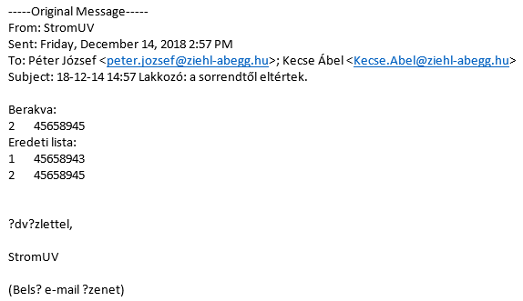
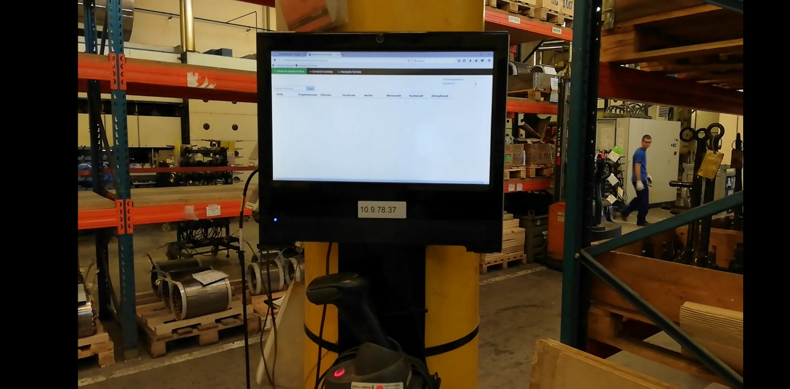

Eine Idee eines Mechatroniker-Ingenieurs wurde realisiert, es wird in eine Maschine lackierten Elektromotorkomponenten gelegt , die Motoreigenschaften bestimmen, wie viel Zeit Sie in der Maschine verbringen( UV-Licht Betrieb Isolierlack Abtaucher und Trockner Maschine), wenn man eine korrekte Reihenfolge bestimmt, können sie die Prozesszeit reduzieren.
Die Maschine hat mehrere Bereiche wo mann Elektromotoren platzieren kann, die verschiedene Bereiche sind für verschiedene Phasen des Trocknens geeignet. Elektromotoren haben verschiedene Größen, deshalb die Phasen können verschiedene lange Dauern. Der Algorithmus zur Berechnung der richtigen Sequenz mit einem Lahmen Powerpoint-Zeichnung:
Der Punkt ist, dass ich in der Lage war, die von den deutschen Ingenieuren gesendete Daten mit der gescannten Motoren zu verknüpfen. Die Daten beschreiben die Dauer jedes Arbeitsphase der Produktionsmaschine, und die Fertigungszeit eines Arbeitsphases wird durch das zuvor in die Maschine gelegte Motortyp bestimmt, Z. B. (Fertigungsdauer der nächste in Maschine gelegte Motor )=(letztes) minus (Dauer ein Teil des Prozesses, wenn ein Elektromotorkomponent gleichzeitig in der Produktionsmaschine ist) minus (ein anderer Prozess)............ und aufgrund verschiedener Ereignisse berechne ich diesen Wert neu und sortiere die Reichenfolger dann entsprechend. Die Reihenfolge bestimmt welche Motor soll als naechstes in die Maschine eingelegt werden. Wenn die Mitarbeiter die Reihenfolge einhalten, können sie die Prozesszeit reduzieren. Ich liefere auch eine back-trace der Mitarbeiter, indem ich eine e-mail über smtp-Protokoll zur Schichtleitern schicken und logging- Aktivitäten in die Datenbank.
Dies ist eine warnende E-Mail-Nachricht, die vom Programm im Falle eines mitarbeiterfehlers gesendet wird.
Das Programm auf einem dünnen client neben der Fertigungsmaschine.
Meine RFID-Karte verwendete ich, um das Einloggen zu testen.